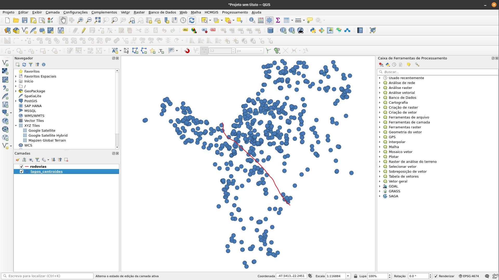
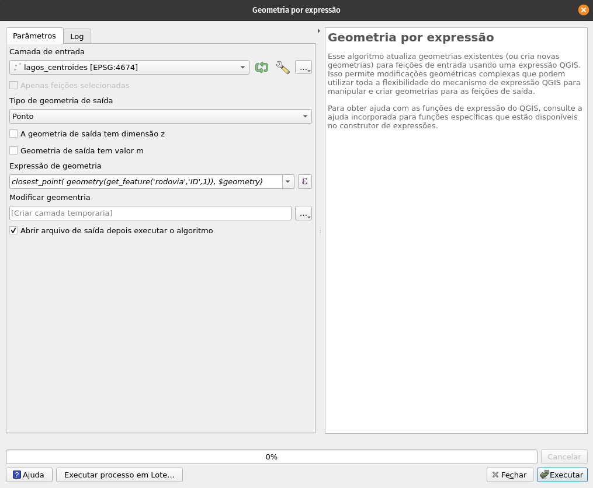
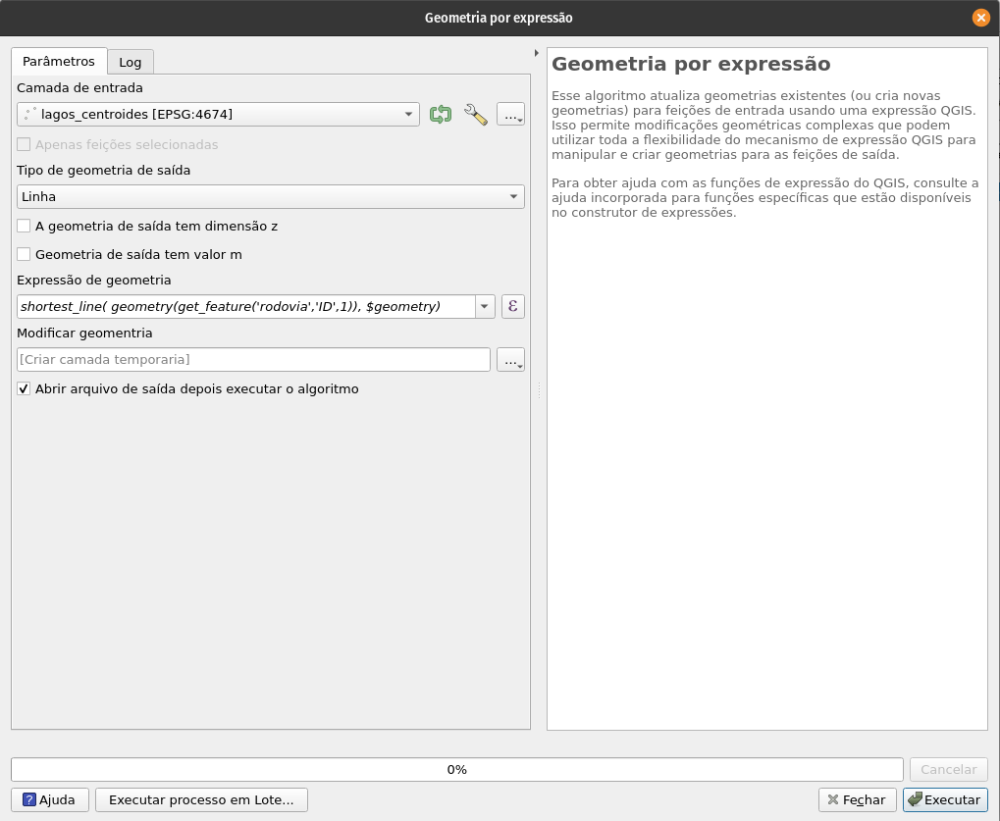
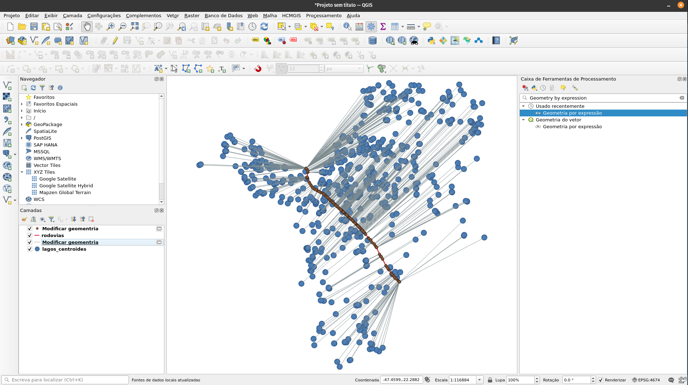

Distância de pontos a linhas
Cálculo da distância de pontos a linhas no R e no QGIS
By Maurício Vancine in Blog
July 10, 2022
Contextualização
Há um certo tempo, o Prof. Pavel Dodonov da UFBA e autor do blog Mais Um Blog de Ecologia e Estatística me mandou um email pedindo ajuda com um problema muito interessante. Nas palavras dele: “Tenho um conjunto de pontos e uma linha representando uma estrada, e quero projetar os pontos sobre a estrada, ou seja, criar sobre a estrada um conjunto de pontos que sejam o mais próximos dos pontos originais.”
Ele mesmo achou a solução no QGIS neste link e enviou a solução usando o “Geometry by expression” do “Processing Toolbox”, com a expressão:
closest_point( geometry(get_feature('vetor_estrada','ID',1)), $geometry)
Eu gosto muito do QGIS. Mas prefiro o R para fazer esses tipos de análises porque gosto de ter um script que me recorde dos passos realizados. Além disso sou preguiçoso para lembrar dos cliques e caminhos para ter o mesmo resultado no QGIS.
Olhando para esse problema e pensando que há muitas aplicações em Ecologia Espacial, como distância de registros de animais ou plantas de um transecto, efeito de atropelamento, distância de floresta para corpos d’água, etc., decidi procurar uma solução em R. Este post é a solução que encontrei.
Pacotes
Vamos usar aqui os pacotes: dplyr para manipular dados tabulares, ggplot2 para gráficos, geobr para limites geográficos (lembrando que atualmente para instalar esse pacote precisa ser do
GitHub), sf para manipular dados vetoriais, raster para manipular dados raster, geosphere para as distância perpendiculares, SpatialKDE para densidade de kernel e o tmap para fazer os mapas. Vamos aumentar o tempo de download também.
# pacotes
library(dplyr)
library(ggplot2)
library(geobr)
library(sf)
library(raster)
library(geosphere)
library(SpatialKDE)
library(tmap)
# opcoes
options(timeout = 600) # aumentar o tempo de download
Download dos dados
Vamos começar com um conjunto de dados para fazer essas análises. Mudando um pouco o foco do problema e contextualizando, eu vou usar o centroide de lagos e lagoas para as estradas dos município de Rio Claro/SP. Assim, minha pergunta seria quais lagos e lagoas estão mais sugeitas a atropelamentos de anfíbios e ainda, quais dessas estariam sofrendo mais com a interferência sonora na vocalização de anfíbios.
Os dados de lagoas, vou baixar da Fundação Brasileira de Desenvolvimento Sustentável (FBDS).
# diretorio
path <- "/home/mude/data/github/mauriciovancine/apero/content/blog/eco-espa-distancia-ponto-linha/data/"
# download de dados dos lagos e lagoas
for(i in c(".dbf", ".prj", ".shx", ".shp")){
download.file(url = paste0("http://geo.fbds.org.br/SP/RIO_CLARO/HIDROGRAFIA/SP_3543907_MASSAS_DAGUA", i),
destfile = paste0(path, "SP_3543907_MASSAS_DAGUA", i), mode = "wb")
}
Agora vamos fazer o download das rodovidas federais do Departamento Nacional de Infraestrutura de Transportes (DNIT).
# download de dados das estradas
download.file(url = "https://servicos.dnit.gov.br/dnitcloud/index.php/s/oTpPRmYs5AAdiNr/download?path=%2FSNV%20Bases%20Geom%C3%A9tricas%20(2013-Atual)%20(SHP)&files=202206A.zip",
destfile = paste0(path, "rodovia.zip"), mode = "wb")
# unzip
unzip(zipfile = paste0(path, "rodovia.zip"), exdir = path)
Importar dados para o R
Vamos primeiramente importar dados do limite de Rio Claro/SP e reprojetar para o sistema geográfico com Datum SIRGAS2000.
# download de dados para o limite de Rio Claro/SP
rio_claro <- geobr::read_municipality(code_muni = 3543907, year = 2020, showProgress = FALSE) |>
sf::st_transform(crs = 4674) |>
dplyr::mutate(id = 1) |>
dplyr::select(id)
# mapa
tm_shape(rio_claro) +
tm_polygons()

Agora vamos importar esses dados para o R. Primeiro, vamos importar os dados de lagos/lagoas.
# importar dados de lagos/lagoas
lagos <- sf::st_read(paste0(path, "SP_3543907_MASSAS_DAGUA.shp"), quiet = TRUE) |>
sf::st_transform(crs = 4674) |>
dplyr::mutate(id = 1) |>
dplyr::select(id)
# mapa
tm_shape(rio_claro) +
tm_polygons() +
tm_shape(lagos) +
tm_fill(col = "blue")

Agora, vamos importar dos dados de rodovia e ajustar para o limite de Rio Claro/SP.
# importar dados de rodovia
rodovia <- sf::st_read(paste0(path, "SNV_202206A.shp"), quiet = TRUE) |>
sf::st_intersection(rio_claro) |>
sf::st_union() |>
sf::st_as_sf() |>
dplyr::mutate(id = 1) |>
dplyr::select(id)
## Warning: attribute variables are assumed to be spatially constant throughout all
## geometries
# mapa
tm_shape(rio_claro) +
tm_polygons() +
tm_shape(rodovia) +
tm_lines()

Análise
Uma forma de realizar essa análise é usando dados geográficos. Isso funciona melhor para grandes distâncias geográficas, porque considera a curvatura do planeta. Dessa forma, utilizaremos a função dist2Line() do pacote geosphere.
A nossa primeira análise é criar os centroides para os lagos/lagoas de Rio Claro/SP.
# centroides
lagos_centroides <- sf::st_centroid(lagos)
## Warning in st_centroid.sf(lagos): st_centroid assumes attributes are constant
## over geometries of x
# mapa
tm_shape(rio_claro) +
tm_polygons() +
tm_shape(lagos) +
tm_polygons() +
tm_shape(rodovia) +
tm_lines() +
tm_shape(lagos_centroides) +
tm_dots()

Agora, podemos calcular as distâncias de cada centroide dos lagos/lagoas até a rodovia. Mas antes disso, precisamos transformar nossos dados de sf para sp.
# sp
lagos_centroides_sp <- sf::as_Spatial(lagos_centroides)
rodovia_sp <- sf::as_Spatial(rodovia)
# distancias
dist <- geosphere::dist2Line(lagos_centroides_sp, rodovia_sp) |>
as.data.frame()
head(dist)
## distance lon lat ID
## 1 11668.100 -47.55548 -22.45285 1
## 2 11329.337 -47.55548 -22.45285 1
## 3 10451.366 -47.55548 -22.45285 1
## 4 10372.662 -47.55548 -22.45285 1
## 5 8254.727 -47.55548 -22.45285 1
## 6 8164.196 -47.55548 -22.45285 1
O resultado é uma tabela que contém quatro colunas:
- distance: distância em metros do centroide do lago/lagoa até a rodovia
- lon: longitude da ponto que cai sobre a rodovia
- lat: latitude da ponto que cai sobre a rodovia
- id: identificação de cada linha, mas no nosso caso como há apenas uma rodovia, o valor é sempre um
A ordem dos dados segue a mesma ordem dos pontos. Assim, já teríamos uma ideia de qual lago/lagoa seria mais afetada atribuindo esses valores ao vetor dos centroides ou mesmo do polígono de lagos/lagos.
# atribuindo os valores de distancia a centroides e lagos/lagoas
lagos_dist <- dplyr::bind_cols(lagos, dist)
lagos_centroides_dist <- dplyr::bind_cols(lagos_centroides, dist)
# mapas de lagos/lagoas
tm_shape(rio_claro) +
tm_polygons() +
tm_shape(lagos_dist) +
tm_fill(col = "distance", pal = "Spectral", style = "pretty", n = 10) +
tm_shape(rodovia) +
tm_lines()

# mapa de centroides
tm_shape(rio_claro) +
tm_polygons() +
tm_shape(rodovia) +
tm_lines() +
tm_shape(lagos_centroides_dist) +
tm_bubbles(col = "distance", pal = "Spectral", size = .1,
style = "pretty", n = 10)

Mas a parte legal das análises é ter os pontos sobre a rodovia, assim como as linhas de distância.
# vetores
lagos_centroides_pontos_total <- NULL
lagos_centroides_linhas_total <- NULL
# for
for(i in 1:nrow(lagos_centroides)){
# filtrar
lagos_centroides_i <- sf::st_as_sf(lagos_centroides[i, ])
lagos_centroides_dist_i <- sf::st_as_sf(dist[i, 2:3], coords = c("lon", "lat"), crs = 4674)
lagos_centroides_lines_i <- sf::st_union(lagos_centroides_i, lagos_centroides_dist_i) |>
sf::st_cast("LINESTRING") |>
dplyr::select(geometry) |>
dplyr::mutate(dist = lagos_centroides_dist[i, 1], .before = 1)
# combinar
lagos_centroides_pontos_total <- dplyr::bind_rows(lagos_centroides_pontos_total, lagos_centroides_dist_i)
lagos_centroides_linhas_total <- dplyr::bind_rows(lagos_centroides_linhas_total, lagos_centroides_lines_i)
}
Agora temos os pontos que caem em cima da rodovia e as linhas que conectam esses pontos à cada centroide de lagos/lagoas.
# mapa
tm_shape(rio_claro) +
tm_polygons() +
tm_shape(rodovia) +
tm_lines() +
tm_shape(lagos_centroides_pontos_total) +
tm_dots(col = "red", alpha = .5)

# mapa
tm_shape(rio_claro) +
tm_polygons() +
tm_shape(rodovia) +
tm_lines() +
tm_shape(lagos_centroides) +
tm_dots() +
tm_shape(lagos_centroides_pontos_total) +
tm_dots(col = "red", alpha = .5) +
tm_shape(lagos_centroides_linhas_total) +
tm_lines(col = "forestgreen", alpha = .5)

É importante ressaltar que as linhas não parecem perpendiculares porque a rodovia muda sua angulação, fazendo com que alguns pontos não parecem perpendiculares.
Para garantir esse efeito, podemos usar uma linha que conecte os extremos da rodovia e rodar novamente a análise.
# pontos extremos da rodovia
rodovia_pontos <- sf::st_cast(rodovia, "POINT")[c(1, 29), ]
# linha que conecta os pontos extremos da rodovia
rodovia_linha <- rodovia_pontos |>
dplyr::group_by(id) |>
sf::st_union() |>
sf::st_cast("LINESTRING")
# mapa
tm_shape(rio_claro) +
tm_polygons() +
tm_shape(rodovia) +
tm_lines() +
tm_shape(rodovia_pontos) +
tm_bubbles() +
tm_shape(rodovia_linha) +
tm_lines(col = "blue")

Vamos recalcular as distâncias.
# distancias
dist_per <- geosphere::dist2Line(lagos_centroides_sp, sf::as_Spatial(rodovia_linha)) |>
as.data.frame()
head(dist_per)
## distance lon lat ID
## 1 11668.100 -47.55548 -22.45285 1
## 2 11329.337 -47.55548 -22.45285 1
## 3 10451.366 -47.55548 -22.45285 1
## 4 10372.662 -47.55548 -22.45285 1
## 5 8254.727 -47.55548 -22.45285 1
## 6 8164.196 -47.55548 -22.45285 1
# vetores
lagos_centroides_pontos_total_per <- NULL
lagos_centroides_linhas_total_per <- NULL
# for
for(i in 1:nrow(lagos_centroides)){
# filtrar
lagos_centroides_i <- sf::st_as_sf(lagos_centroides[i, ])
lagos_centroides_dist_i <- sf::st_as_sf(dist_per[i, 2:3], coords = c("lon", "lat"), crs = 4674)
lagos_centroides_lines_i <- sf::st_union(lagos_centroides_i, lagos_centroides_dist_i) |>
sf::st_cast("LINESTRING") |>
dplyr::select(geometry) |>
dplyr::mutate(dist = lagos_centroides_dist[i, 1], .before = 1)
# combinar
lagos_centroides_pontos_total_per <- dplyr::bind_rows(lagos_centroides_pontos_total_per, lagos_centroides_dist_i)
lagos_centroides_linhas_total_per <- dplyr::bind_rows(lagos_centroides_linhas_total_per, lagos_centroides_lines_i)
}
Agora temos os pontos que caem em cima da rodovia e as linhas que conectam esses pontos à cada centroide de lagos/lagoas.
# mapa
tm_shape(rio_claro) +
tm_polygons() +
tm_shape(rodovia) +
tm_lines() +
tm_shape(lagos_centroides_pontos_total_per) +
tm_dots(col = "red", alpha = .5)

# mapa
tm_shape(rio_claro) +
tm_polygons() +
tm_shape(rodovia) +
tm_lines() +
tm_shape(lagos_centroides) +
tm_dots() +
tm_shape(lagos_centroides_pontos_total_per) +
tm_dots(col = "red", alpha = .5) +
tm_shape(lagos_centroides_linhas_total_per) +
tm_lines(col = "forestgreen", alpha = .5)

Comparando os resultados das distâncias, não notamos uma diferença significativa.
ggplot(data = tibble::tibble(dist = dist$distance, dist_per = dist_per$distance)) +
aes(x = dist, y = dist_per) +
geom_point() +
labs(x = "Distância (m)", y = "Distância perpendicular (m)") +
annotate("text", x = 2000, y = 19000, label = paste0("r = ", round(cor(dist$distance, dist_per$distance), 3)), size = 7) +
theme_bw(base_size = 15)

QGIS
Como disse antes, eu amo o QGIS e pode ser interessante registrar aqui também uma forma de fazer nele. A implementação eu segui deste site. Para mais detalhes de como usar o “Geometry Generator”, veja este vídeo. Mas ressaltando que aqui, usamos o “Geometry by expression” do “Processing Toolbox”.
Bom, primeiro vamos exportar os dados para um diretório.
# exportar
sf::st_write(lagos_centroides, paste0(path, "lagos_centroides.shp"))
sf::st_write(rodovia, paste0(path, "rodovia.shp"))
Em seguida, vamos carreguar os dados no QGIS.

Para criar os pontos em cima da rodovia, procure por “Geometry by expression” no “Processing Toolbox”. Abra essa ferramenta e na janela que se abrir defina:
- Camada de entrada: lagos_centroides
- Tipo de Geometria de Saída: Ponto
- Expressão de Geometria:
closest_point( geometry(get_feature('rodovia','ID',1)), $geometry) - Modificar geomentria: criar uma camada temporária ou selecionar um diretório e nome do arquivo de saída

Para criar as linhas que ligam os centroides aos pontos em cima da rodovia, abra essa mesma ferramenta e na janela que se abrir defina:
- Camada de entrada: lagos_centroides
- Tipo de Geometria de Saída: Linha
- Expressão de Geometria:
shortest_line( geometry(get_feature('rodovia','ID',1)), $geometry) - Modificar geomentria: criar uma camada temporária ou selecionar um diretório e nome do arquivo de saída

O resultado dessas operações.

Para calcular as distâncias ou melhor, o comprimento das linhas, basta deixar as linhas criadas selecionadas, ir em “Modificar geometria - Calculadora de campo”, criar um campo novo, adicionar um nome, em tipo selecionar Número decimal (real), e na expressão utilizar $length. Assim, uma coluna será adicionada com o comprimento das linhas, que é a distância de cada centroide para o ponto que cai em cima da rodovia.
Fazendo novamente uma correlação temos números quase idênticos.
# correlacao
linhas_qgis <- sf::st_read(paste0(path, "linhas_qgis.shp"), quiet = TRUE)
ggplot(data = tibble::tibble(dist = dist$distance, dist_qgis = linhas_qgis$dist)) +
aes(x = dist, y = dist_qgis) +
geom_point() +
labs(x = "Distância (m)", y = "Distância QGIS (m)") +
annotate("text", x = 2000, y = 19000, label = paste0("r = ", round(cor(dist$distance, linhas_qgis$dist), 5)), size = 7) +
theme_bw(base_size = 15)

Comparei os resultados visualmente e há pequenas mudanças, talvez sejam algoritmos diferentes, mas não sei ao certo. De qualquer forma, os dados ficam bem semelhantes.
Kernel
Por fim, uma análise final muito interessante que podemos fazer é uma análise de kernel ou adensamento dos pontos ao longo da rodovia. Isso pode trazer um panorama interessante de onde os corpos d’água se agrupam mais.
# reprojetar pontos
lagos_centroides_pontos_total_utm <- sf::st_transform(lagos_centroides_pontos_total, crs = 31984)
# buffer
rodovia_utm_buffer <- rodovia |>
sf::st_transform(crs = 31984) |>
sf::st_buffer(dist = 2000)
# cell size e band width
cell_size <- 200
band_width <- 500
# grid
rodovia_utm_buffer_raster <- rodovia_utm_buffer |>
create_raster(cell_size = cell_size, side_offset = band_width)
# kernel
lagos_centroides_pontos_total_utm_buffer_kde <- lagos_centroides_pontos_total_utm |>
dplyr::select(geometry) |>
SpatialKDE::kde(band_width = band_width,
kernel = "quartic",
grid = rodovia_utm_buffer_raster) |>
raster::mask(rodovia_utm_buffer)
# mapa
tm_shape(lagos_centroides_pontos_total_utm_buffer_kde) +
tm_raster(pal = "-RdBu", style = "fisher", title = "Kernel") +
tm_shape(rodovia_utm_buffer) +
tm_borders() +
tm_shape(rodovia) +
tm_lines() +
tm_shape(lagos_centroides_linhas_total) +
tm_lines(col = "forestgreen", alpha = .3) +
tm_shape(lagos_centroides_pontos_total) +
tm_dots(alpha = .7) +
tm_layout(legend.position = c("left", "bottom"))